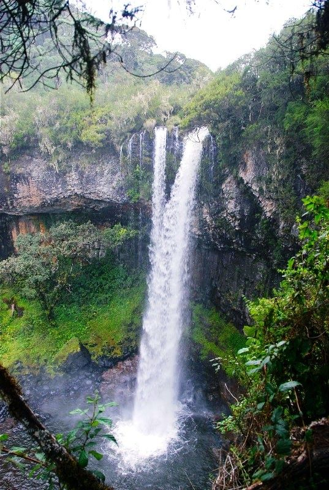
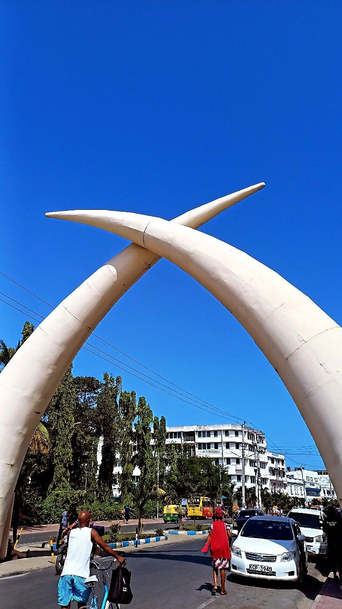

Gallery
There are a number of pictures uploaded after my last visit to some places

Mai Mahiu
I took this photo at a beautiful scenery at mai mahiu and it has a good vibe making it one of my favourite photos.
the best part about mai mahiu is that it has landscapes and open roads that create powerful and inspiring views.

Thompsons falls
Cant ignore the Thompsons falls. The scenery is amazing.
It is one of kenya's most beautiful natural waterfalls. The powerful drop of water surrounded by green landscape and cool mist creates a peaceful and refreshing atmosphere.

Mombasa
One of the best places to visit in Kenya is Mombasa. The beaches are amazing and the vibe is just perfect.
There are also so many places for photograph work and beautiful ones apart from the coast view making it have a number of sceneries.